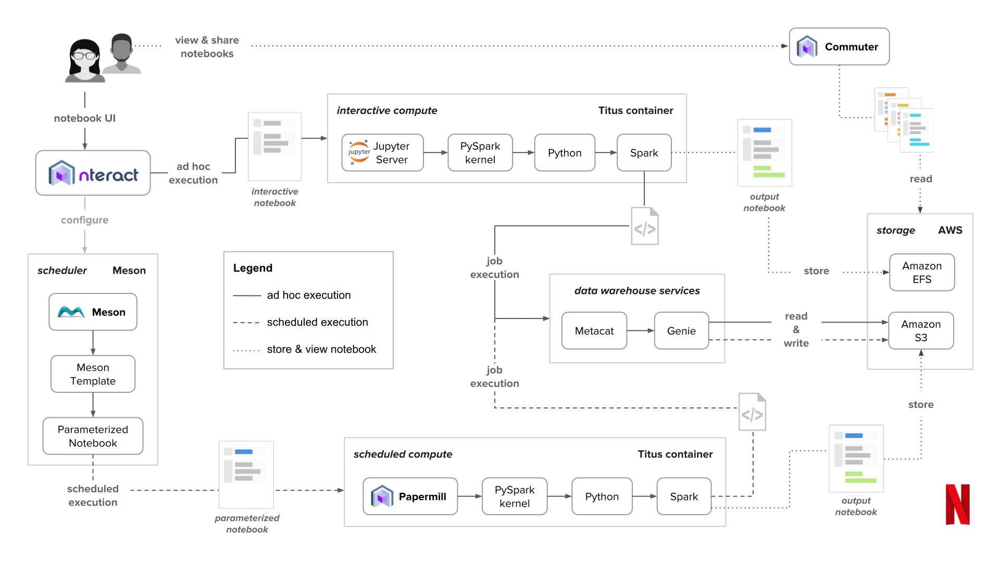

Jupyter notebooks¶
Intro and Objectives¶
We will be using Jupyter notebooks in this class as they make sense for many of the tutorials that we’ll work through. However, we will also be using integrated development environments (IDE) such as PyCharm or VSCode. It’s important that you are comfortable using Jupyter Notebooks as they are ubiquitous in the data science world. But, creating production code in a Jupyter Notebook isn’t always a great idea. We’ll see why throughout the course.
Interactive computing in notebooks is not a new concept. In this module we’ll also take a tour of the history of notebook computing and get a glimpse of where notebook computing might be going.
Readings¶
There are various web based readings scattered throughout the Activities section below.
Some good resources to know about:
{kind=link}
Downloads¶
Activities¶
A brief history of notebook computing¶
There is much to be learned from studying the history of computing. When you know some history it helps you put more recent developments in context. You are better positioned to separate hype from reality and it just makes for a richer computing experience when you have a sense of where we came from. The history of notebook based computing goes back decades (much further if you consider the classic scientific lab notebooks that have been scrawled in for hundreds of years). As a graduate student in the late 1980’s, I remember being stunned when I saw what Mathematica could do - check out a scrapbook of the evolution of Mathematica over the last 35 years. Mathematica introduced the notion of a notebook that mixed text and computing, but it was much more than that - it could do symbolic math as well as numerical computing and jaw-dropping scientific plotting (on 1990s computing hardware). I saw it being piloted in undergraduate calculus courses and I used it myself during my graduate engineering studies.
At the 2020 EuroPython Online Conference, there was a terrific talk given on a Brief History of Jupyter Notebooks by William Horton (who has one of the alltime great Twitter handles). It does a very good job of putting Jupyter notebooks into a historical context. Please give it a watch as it is super relevant to this course.
As you’ll learn from the talk above, Fernando Perez is the main developer behind Jupyter Notebooks. It’s a classic story of a new technology being the result of a combination of need and circumstances. It’s an even better story because Fernando was a graduate student(!) when he announced the IPython project to the open source community. He has a pretty famous blog post done in 2012 where he reflects on the history of his role in developing the IPython notebook. The presigious journal, Nature, highlighted in 2018, the growing role of Jupyter notebooks in science and then, in 2021, named Jupyter notebooks one of the Ten computer codes that transformed science. For this, Perez was honored by the Department of Statistics at Cal-Berkeley, his current academic home.
Jupyter Lab¶
If you haven’t used Jupyter notebooks in a while, you may not be aware of the newer interface, Jupyter Lab. We’ll be using Jupyter Lab (though you can use the old Notebook interface if you want) in this class.
In the pcda class, I created a screencast describing the differences between Jupyter Notebooks and Jupyter Lab. It’s on the Intro to Python page.
Jupyter Lab: Evolution of the Jupyter Notebook - short article that hits the highlights
The notebook wars¶
In 2018, a very entertaining and thought provoking presentation was done by Joel Grus at JupyterCon, entitled “I don’t like (Jupyter) notebooks”. Kudos for the conference organizers for inviting a talk centered around the on the shortcomings of Jupyter notebooks for sci computing. Going through the presentation slides (warning, he likes memes) as well as reading the response below from Yihui Xie as well as viewing the slides by Tim Hopper, can make you a better and more aware notebook user and software developer. This discussion gets to the issue of whether we are analysts/modelers or software developers - or both. After reading these, you’ll recognize that many of the same issues apply to how spreadsheets are used (and misused) and loved (and despised).
Here are some questions to keep in mind as you go through Joel’s talk and some of the response below:
What is this “hidden state” issue he is talking about?
What are the other main dislikes that he has?
What are some of the issues associated with Jupyter notebooks and version control?
Which of the dislikes that he points out have more to do with the state of development of the Jupyter notebook interface than with the way notebooks fundamentally work?
Which of the dislikes that he points out have more to do with how people use notebooks than the notebooks themselves?
How does working in a notebook differ from working in an IDE (such as VSCode or PyCharm)?
What is the meaning and importance of “Restart kernel and run all”?
Going forward, what kinds of things do you think you’ll use notebooks for and what other tools do you think you’ll use for other non-notebook Python coding tasks?
Yihui Xie (author of the R package knitr) responds from an R perspective.
I Like Notebooks - a response to Joel Grus from Tim Hopper done in Joel Grus style slides (but not nearly as many)
In 2017, Jupyter received the ACM Software System Award - past winners include Unix, Tex, S (which led to R), Java, Mosaic (the first killer web browser), and more.
To bring this full-cirle, in 2018, an article appeared in The Atlantic on the role of notebooks in making scientific papers “obsolete”. It starts by talking about Mathematica and ends with Jupyter notebooks.
Becoming a better notebook user¶
If you feel you need a beginner level tutorial first, here is a newer one:
Now use Jupyter Lab to open notebook_computing_basics.ipynb, which is in the Downloads file (or feel free to use the one inside the nbbasics folder in the download file for the Git Intro activity). The following screencast will guide you through the notebook. This reviews a few basics and then focuses on higher level best practices for using notebooks for analytics work.
There are numerous ways to run Python code with Jupyter notebooks being just one of many:
- Jupyter notebooks via Lab or classic Notebook interface
IPython console from Anaconda prompt
IDLE console from Anaconda prompt
IDEs like PyCharm and VSCode
integrated IPython consoles within IDEs
from the command line
mix and match these as desired to match your workflow preferences and based on specific project
While we are focusing on notebooks now, we will be using a mix of tools throughout the semester.
Case Study: Notebook computing at Netflix¶
If you have ever wondered if notebooks can scale, check out this overview blog post of how Netflix has leveraged Juptyer notebooks in their analytics ecosystem.
As a teaser, here’s a high level view of their notebook architecture (taken from blog post linked above):
About a year and a half ago, Netflix released their Metaflow framework for data science as an open source project. After developing a bunch of data science infrastructure, they’ve decided to share it.
The near future of notebook computing¶
There is a lot of work going on in the Jupyter community to improve the notebook ecosystem. The following, short, three part blog series does an outstanding job of looking at the forces of change in the data science community, assessing the recent growth in the Jupyter notebook ecosystem in response to these forces, and looking further into the future of notebook computing. As you are reading these, take note of a tool or two that you might try out at some point during the semester. We will be trying out a few as part of the class but there are tons of new tools.
How to use Jupyter Notebooks in 2020:
There’s a good discussion of this series of posts on Reddit - links are at the end of the Part 3 post.
Explore (OPTIONAL)¶
Recent thoughts¶
More History¶
This early (#163) xkcd comic on Donald Knuth is a classic and well worth the click. Oh, and if we’re doing xkcd on Donald Knuth, here’s another one and finally DK makes a cameo in this epic 5 part series.
Donald Knuth’s Literate Programming page
The Byte Magazine archive - I used to go to grocery stores and buy this magazine (those were the days).
More from the Jupyter Notebook ecosystem¶
nbdime - diffing and merging of Jupyter notebooks
nbstripout - Strip output from notebooks (used pre-commit)
nbdev - Use notebooks as a development environment - created by the folks at fastai
Jupyter Lab debugger - a new development and requires a little work to get using with Anaconda.
The Jupyter Notebook Viewer Web based notebook renderer; easy way to share rendered version of your notebook hosted anywhere on the web
Books with Jupyter - by combining Jupyter, Sphinx, Myst, RestructuredText, and more, a whole new world of interactive and computational books is possible.